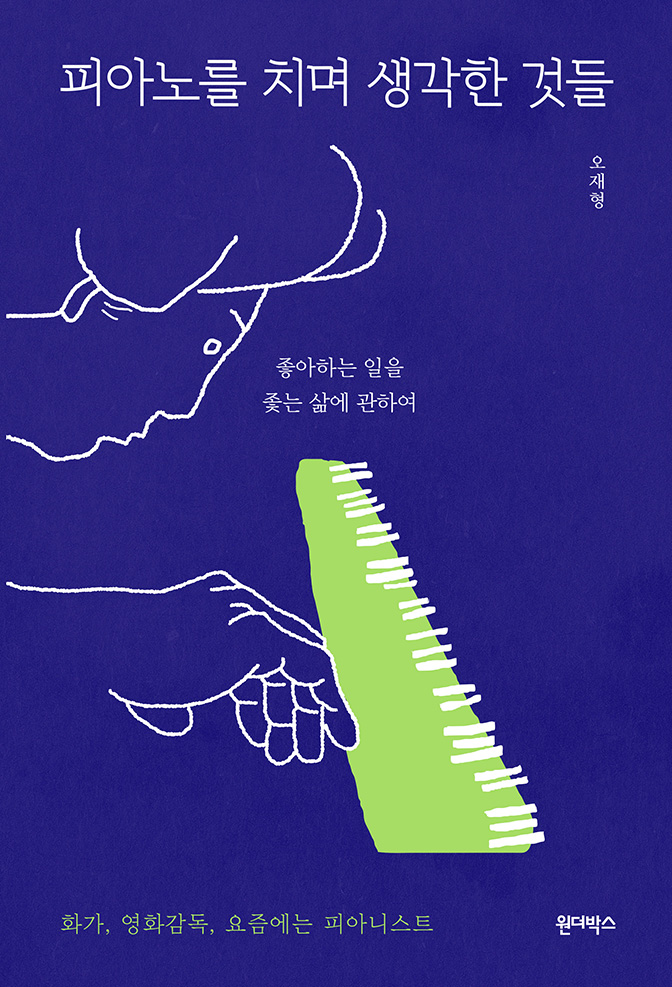
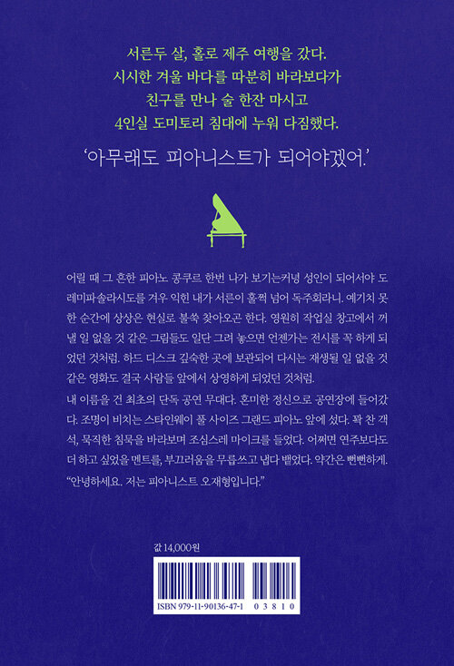

피아노를 치며 생각한 것들
좋아하는 일을 좇는 삶에 관하여
오재형 지음


2021.06.22. 출간 / 272쪽 / 128*188mm / 무선 / 에세이
화가로 개인전만 네 번, 칸에 초청받은 영화감독, 요즘에는 피아니스트
서른두 살 겨울, 홀로 떠난 제주 여행. 시시한 바다를 따분히 바라보고 재미없는 책을 읽다가, 연고도 없는 곳에서 대출받아 치킨집을 차린 친구를 만나 술을 마셨다. 친구와 작별하고 공항 근처 게스트하우스에 들어가 4인실 도미토리 침대에서 누워 다짐했다. ‘아무래도 피아니스트가 되어야겠어.’ 장기하와 얼굴들의 “오래된 마음이 숨을 쉬네”라는 노랫말처럼, 스무 살 무렵 취미 삼아 배운 피아노가 불현듯 숨 쉬기 시작한 것이다.
성인이 되어 뒤늦게 좋아하게 된 피아노를 직업으로 삼기까지의 이야기를 담았다. 작가는 취미와 직업 사이에 어정쩡하게 서 있는 사람만이 볼 수 있는 시선으로 아마추어와 전문가의 자격을 두고 갈등하는 모습을 솔직하게 풀어놓는다. 무언가를 좋아하는 것에 알맞은 시기가 있고, 그것을 직업으로 택하기에는 일정한 경로가 정해져 있다는 ‘생애주기 이데올로기 사회’에 균열을 내고 싶은 소심한 욕망 한 스푼도 함께.
작가는 자신이 20대에 그린 청사진 중 실현된 것이 하나도 없다고 이야기한다. 정규 코스를 밟은 건 은퇴한 미술뿐이다. 등단한 적 없지만 책을 냈고, 전공하지 않았음에도 영화를 찍고 피아노를 연주해 관객을 만난다. 그런 그가 전하는 메시지는 분명하다. 좋아하는 일을 묵묵히 좇다 보면 누군가는 꼭 손을 잡아 준다는 것. 이 책 역시 그렇게 쓰였다. 마지막 장을 덮을 무렵, 당신의 ‘오래된 마음’이 다시 숨을 쉬기를.